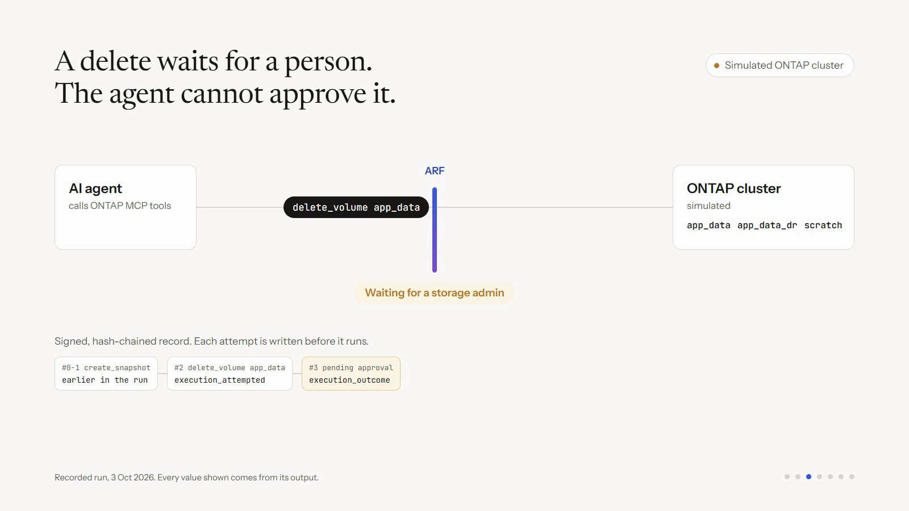

THE DECISION BEFORE EXECUTION
Governing agent
actions at runtime
ApproveDenyEscalate
Record the attempt. Then allow execution.
PRODUCTION IS THE BOUNDARY
Agents now write
to production.
Their decisions are probabilistic.
The consequences aren’t.
Every proposed write needs a decision
before it executes.
One proposal. Three outcomes.
Model the action. Evaluate policy and risk.
APPROVE
Allowed by policy and risk assessment
Record, execute, verifyDENY
Unsupported or outside policy
No upstream actionESCALATE
Requires human authority
Wait for scoped approvalIn the ONTAP proxy: modeled tools, configured risk priors, reversibility checks.
The action meets the gate
RECORDED RUN / SIMULATED ONTAP

3 OCT 2026 · 30-SECOND RECAP · EXISTING ARF RUN
Allowlisted read
passes through.
Attempt recorded.
Result read back.
Scoped approval.
Unknown tool refused.
A record you can verify
Hash-chained entries. Ed25519 signatures.
Offline verification with the public key.
Signed audit path with signing enabled.
Completeness requires a separately retained chain head.
Probabilistic in.
Auditable action out.